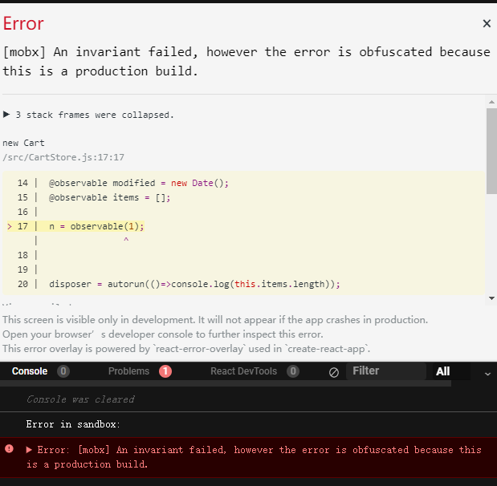
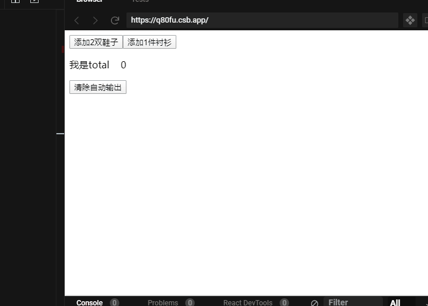
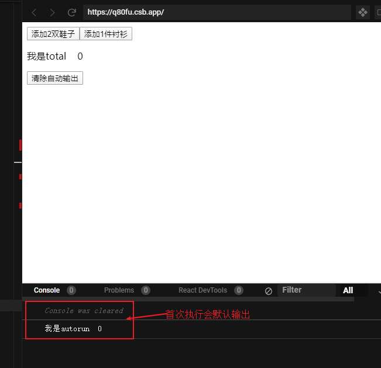
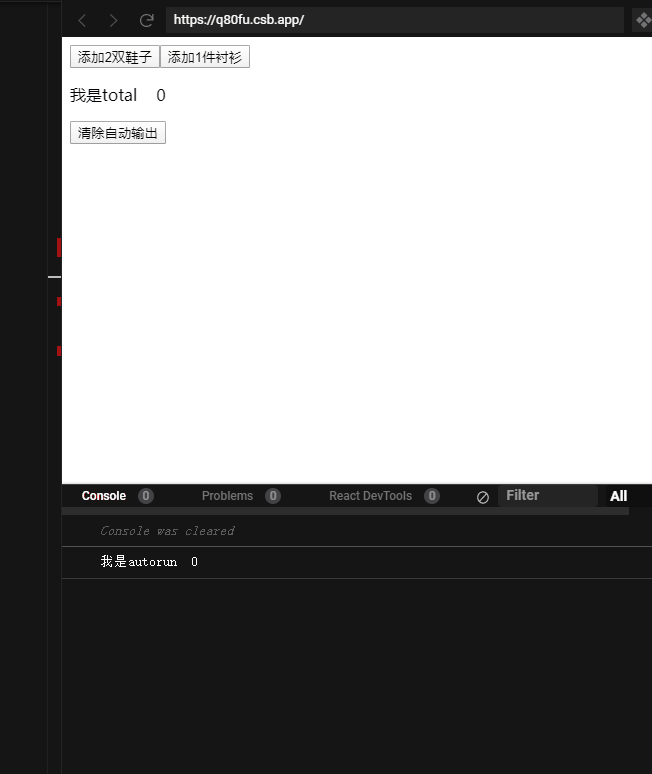

状态管理-Mobx

Observable state(可观察的状态)
observable & observer
observable(value)
value可以是objext、array或map ，observable将其转换成observable entity 被观察的实体。对于javascript的基本类型（number、string、boolean、null和undefined）、function函数和class类类型不会起作用，甚至还会报错。

对于这些例外的类型，需要使用observable.box() API
n = observable.box(1);
console.log(n.get())//读取
n.set(19)//设置新值value为object
observable.object(props, decorators?, options?)
props: object的属性
decorators: 对属性进行装饰，可以将属性设置成 action
options： 传入
{ deep: false }作为第三个参数可以禁用属性值的自动转换
import {observable, autorun, action} from "mobx";
var person = observable({
// observable 属性:
name: "John",
age: 42,
showAge: false,
// 计算属性:
get labelText() {
return this.showAge ? `${this.name} (age: ${this.age})` : this.name;
},
// 动作:
setAge(age) {
this.age = age;
}
}, {
setAge: action
});
// 对象属性没有暴露 'observe' 方法,
// 但不用担心, 'mobx.autorun' 功能更加强大
autorun(() => console.log(person.labelText));
person.name = "Dave";
// 输出: 'Dave'
person.setAge(21);
// 等等
**属性的getter会自动变成衍生属性，也就是@computed**value为array
observable.array(values?)或者将数组传给observable，可以将数组转变为可观察的。 这也是递归的，所以数组中的所有(未来的)值都会是可观察的
import {observable, autorun} from "mobx";
var todos = observable([
{ title: "Spoil tea", completed: true },
{ title: "Make coffee", completed: false }
]);
autorun(() => {
console.log("Remaining:", todos
.filter(todo => !todo.completed)
.map(todo => todo.title)
.join(", ")
);
});
// 输出: 'Remaining: Make coffee'
todos[0].completed = false;
// 输出: 'Remaining: Spoil tea, Make coffee'
todos[2] = { title: 'Take a nap', completed: false };
// 输出: 'Remaining: Spoil tea, Make coffee, Take a nap'
todos.shift();
// 输出: 'Remaining: Make coffee, Take a nap'value为map
observable.map(values,options?)
observable(new Map())
@observable classProperty = value;
ES7或TS类属性中使用装饰器模式
@observable number = 0;
@observable map = new Map();
@onservable arr = [];@observer
observer函数/装饰器可以用来将 React 组件转变成响应式组件。 它用mobx.autorun包装了组件的 render 函数以确保任何组件渲染中使用的数据变化时都可以强制刷新组件。observer是由单独的mobx-react包提供的。
observable声明的是被观察者，需要观察者的存在才有意义
观察者
1: computed
2：autorun
3： when
4： reaction
computed
根据现有状态或其它值衍生出来的值，可以在任意属性getter上使用
@computed来声明式的创建计算属性
//carStore.js
@computed get total() {
return this.items.length;
}
//app.js
<p>我是total {store.total}</p>
autorun
如果你有一个函数应该自动运行，但不会产生一个新的值，请使用autorun autorun(effect-function): disposer-function effect-function: (data) => {}
执行 autorun() 之后返回一个可注销 effect-function 的 disposer-function 函数，此返回函数用于停止 autorun() 的监听，类似于clearTimer(timer) 的作用。
//CartStore.js
<button onClick={() => store.disposer()}>清除自动输出</button>
//App.js
<button onClick={() => store.disposer()}>清除自动输出</button>

只有手动清除才能停止
when
when(predicate: () => boolean, effect?: () => void, options?)
predicate返回true才会执行effect，执行完一次后会自动清除
//CartStore.js
when(
() => this.items.some(item => item === "shoes"),
() => {
console.log("第一次收到鞋子");
}
);reaction
reaction(() => data, (data, reaction) => { sideEffect }, options?)
只有当第一个参数产生新值，才会触发第二个参数的执行
//CartStore.js
reaction(
() => {
let shoesNumber = 0;
this.items.forEach(item => {
if (item === "shoes") shoesNumber++;
});
return shoesNumber;
},
shoesNumber => {
console.log("收到鞋子啦。。。。。" + shoesNumber);
}
);效果见上图。
改变observable
action
action(fn)action(name, fn)@action classMethod() {}@action(name) classMethod () {}@action boundClassMethod = (args) => { body }@action(name) boundClassMethod = (args) => { body }@action.bound classMethod() {}//确保this的指向正确，不能和箭头函数一起使用永远只对修改状态的函数使用
action
//CartStore.js
@action
addItem = (name, quantity) => {
while (quantity > 0) {
this.items.push(name);
quantity--;
}
this.modified = new Date();
};在线示例： https://codesandbox.io/s/github/muyeyong/codesandbox
MoBx中文文档：https://cn.mobx.js.org/
实用工具
Provider
可以用来使用 React 的
context机制来传递 store 给子组件。参见mobx-react文档。
inject
相当于
Provider的高阶组件。可以用来从 React 的context中挑选 store 作为 prop 传递给目标组件.